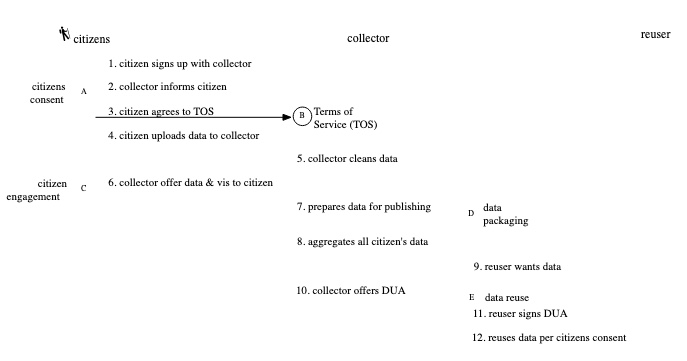

Information Lifecycle
Thursday, March 20, 2014
The citizen who is the source of data and the collector of that data, interface at the five points, namely, Ⓐ, Ⓑ, Ⓒ, Ⓓ and Ⓔ as shown in the information lifecycle diagram below

A: Explore the potential of changing the conversation from the imperative of protecting privacy to the benefits of sharing. I call this Citizens Consent.
B: Demystify the terms of data collection, sharing, access, and reuse by simplifying terms of services (TOS), privacy and sharing policies.
C: Engage the citizens by involving them in the management and interpretation of the data sourced from them.
D: Change the way data are collected and packaged for redistribution and sharing.
E: Demystify the Data Use Agreements (DUA).